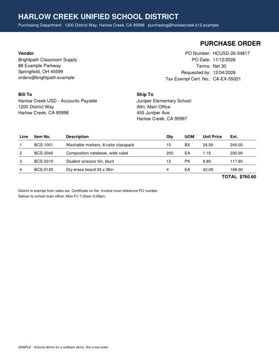
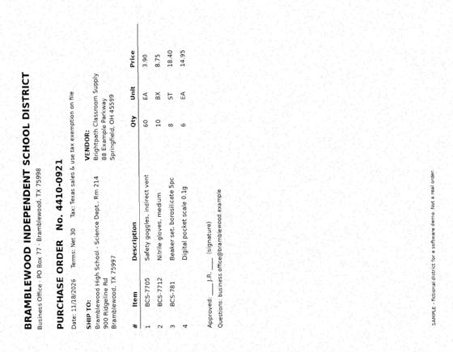
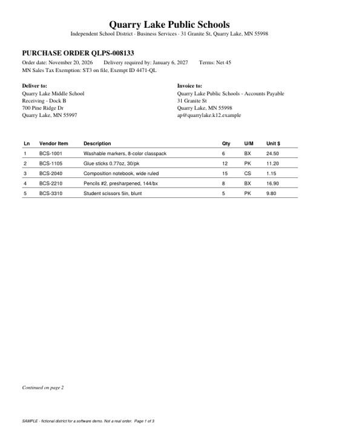

For suppliers that sell to schools, districts and universities. Plumbline reads emailed, scanned and faxed purchase orders, checks them against your customer and item lists, and produces a clean CSV your order system can import. Anything unclear is flagged in plain English, never guessed.
Try it on 3 of your POs ($79)See the test resultsPO number, order date, district (matched to your customer list), bill-to and ship-to (the school, room or dock), requested delivery date, payment terms and the tax-exempt certificate number when it's printed.
Your item number or the district's own wording, quantity, unit and price, across pages, past fax cover sheets and terms pages, on rotated or noisy scans.
Unknown or mistyped item numbers (with the closest match), missing item numbers, unit mismatches like a case ordered at each price, and prices outside your list. Flagged orders go to a person; clean ones go straight to import.
We built three fictional district purchase orders with known values and ran them through the reader on 25 November 2026. One is clean, one is a faxed scan turned sideways, one runs over two pages with a terms page. Problems were planted on purpose to see whether they get caught.
Now 20 documents: on 27 November we extended the test with faxes, upside-down scans, handwriting, an order typed in an email and two documents that aren't orders. 494 of 495 fields correct, 12 of 12 problems flagged, and the one miss shown. See the full 20-document benchmark →
90 / 90 fields read correctly (PO number, dates, district, ship-to, terms, tax-exempt ID, and every line's item, quantity, unit and price).

Imported · no flags4 lines, tax-exempt certificate CA-EX-55021, Net 30.

Sent for review
Sent for reviewField accuracy
| Field | Correct | Field | Correct |
|---|---|---|---|
| PO number | 3/3 | Line item numbers | 16/16 |
| Order date | 3/3 | Line quantities | 16/16 |
| District matched to customer | 3/3 | Line units | 16/16 |
| Ship-to school, city, ZIP | 9/9 | Line prices | 16/16 |
| Payment terms | 3/3 | Tax-exempt ID (where printed) | 2/2 |
Three documents is a demo, not a guarantee. That's why the pilot measures accuracy on your own POs before you rely on it.
The CSV it produced for the clean PO (a few columns left out here to fit; in a real setup the columns follow your import format):
If it's useful, we set it up on your order inbox (Microsoft 365, Outlook or Gmail) with a written guide and a screen recording at handover. Everything is done in writing, by email.
Email about a pilotOrder on UpworkPrefer to buy through a marketplace? The same pilot ($79), a standard setup ($299) and an advanced setup ($499) are listed as fixed-price packages on Upwork, with payment held by Upwork until delivery.